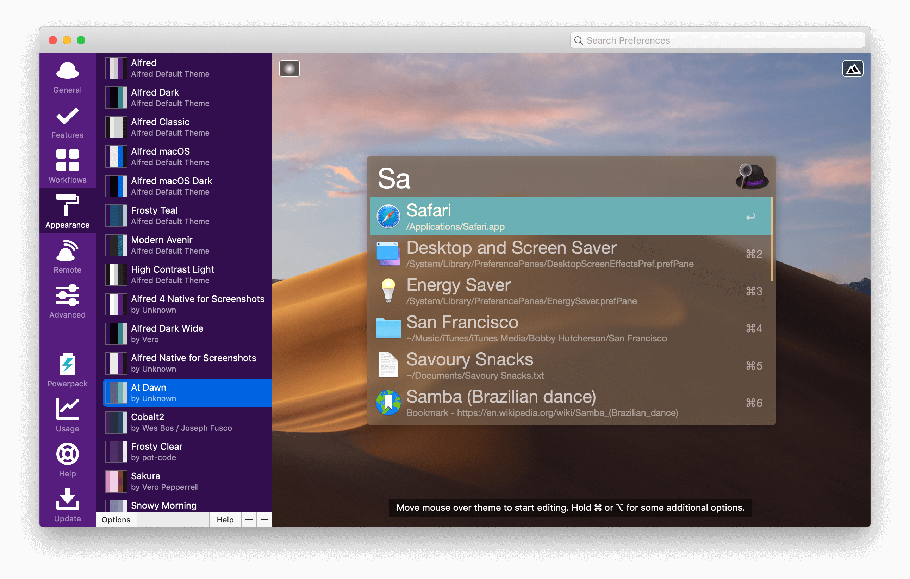
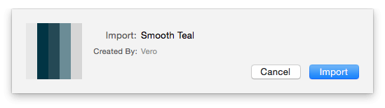
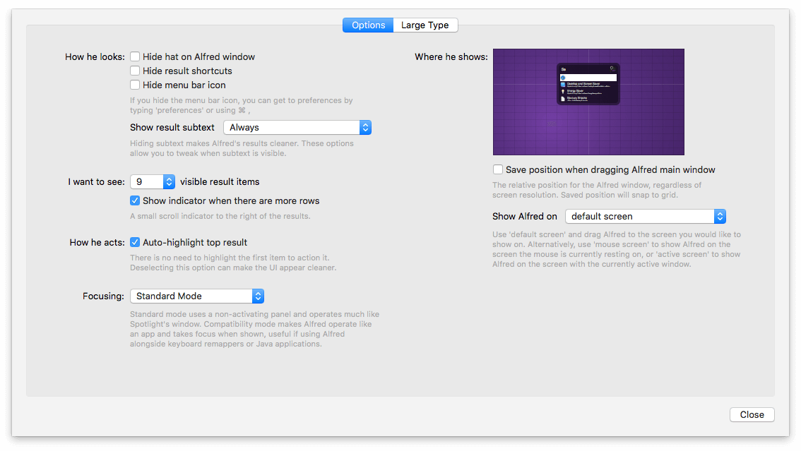

Appearance
In the Appearance preferences, you can change the look of Alfred's window, as well as choose how you want your search results to be presented.
Powerpack users can also create or import custom themes, allowing you to match Alfred to your desktop or to your mood!
In the Appearance preferences, you'll find three key sections:
Using Alfred Themes
Choosing a theme
You can choose one of the default themes by clicking it in the left sidebar. You can click on the mountains icon in the top right to closely match your desktop to help you choose.
Creating and editing themes
Creating themes, exporting and importing them is a Powerpack feature.
To start creating your own theme, click the + button in the bottom left of the Appearance preferences, or right-click an existing theme in the sidebar; Your new theme will be based on the currently selected theme.

Changing the size of elements
You can modify the size of any text, icon, padding and border by clicking and dragging up/down or left/right as relevant.
Hover to see the highlighted item, or take a look at the hints at the bottom of the preview window to see which element you're currently modifying.
Changing colours and opacity
Hover over the element you want to change (e.g. the search background colour) in the preview window, and click to show the colour picker. You can then change the colour and opacity.
Alternatively, right-click anywhere on your theme to choose one of the existing colours from your theme. This is a great way of keeping a consistent colour scheme through your theme!
Changing fonts
To change fonts, right-click on text to view the fonts options
You can use any fonts available on your Mac for your own themes, but be sure to use a Standard font for shared themes (as other users may not have the same fonts library as you do).
Theming Cheatsheet
Need a quick view of the theming hotkeys? Here we go!
- Drag up/down, left/right to change the size of the element
- Click to show the colour wheel
- Right-click to show the colours currently in use and fonts list
- Cmd + drag to scroll through standard fonts options
- Alt + drag to increase or decrease the opacity
- Hold Shift while resizing for more precision
Importing themes
You'll find some great themes in the Themes section of the Alfred forum.
To import a theme, double-click the file. Alfred's Preferences will open and you'll be presented with a preview of the theme colours so that you can choose whether or not to import it.

Once you've imported a theme you like, you can set your window blur for non-opaque themes in the Options sub-tab. This is a global setting for all the non-opaque themes you've created or imported.
Importing older themes
You can import themes from Alfred 3, and they'll look great! You may need to adjust the font height slightly, as this was changed subtly in Alfred 4.
Sharing themes
Once you've created your theme, you can export it as a file or share it on alfredapp.com. It then becomes easy to send the link to your friends, who can preview and download the theme you created.
Right-click the name of your theme in the sidebar to share it. Find out more about theme sharing on alfredapp.com.
Appearance Options
In Appearance, you'll see an Options button in the bottom left, where you can set various additional preferences for how Alfred looks.

You can show/hide the bowler hat and cog, the result shortcuts (the numbers on the right) and the menu bar icon at the top of your Mac's screen.
You can opt to show more or less results, and choose to show or hide the scroll bar to the right of the results.
Choosing which screen Alfred should appear on
If you use dual monitors or multiple screens, you can specify whether Alfred should appear on your default screen, mouse screen or active screen (the display on which the active application is shown).
Using the grid above, you can also set a default position, if you'd prefer Alfred to appear in a location other than the centre top of your screen.
Focusing
By default, Alfred uses a non-activating panel, operating much like Spotlight's window when in Standard mode.
When using the Compatibility mode, Alfred operates like an application and takes focus when shown, which is useful if using Alfred alongside keyboard remappers or Java applications.